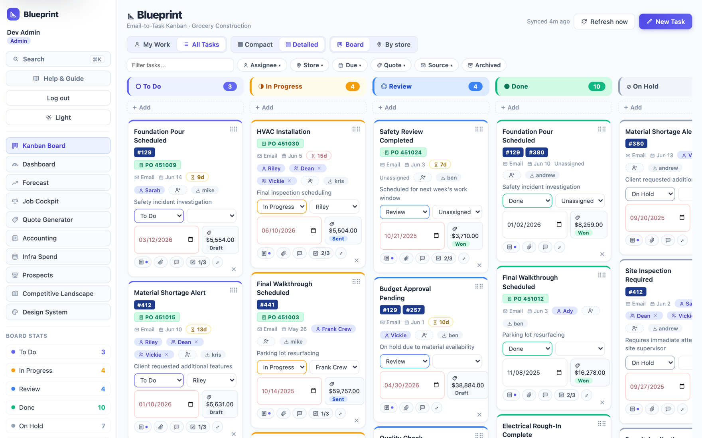
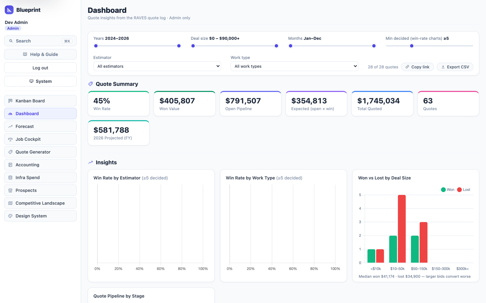
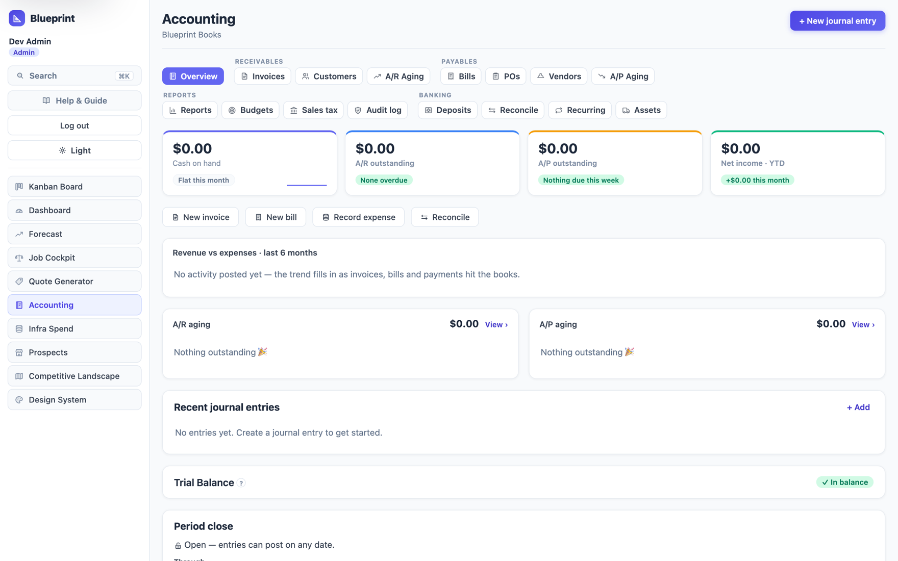
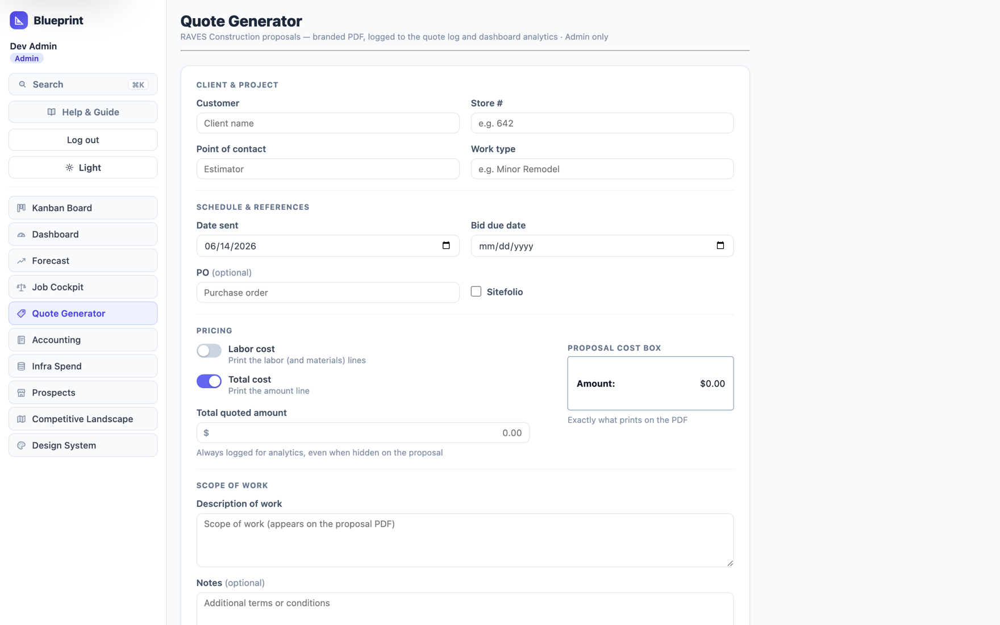
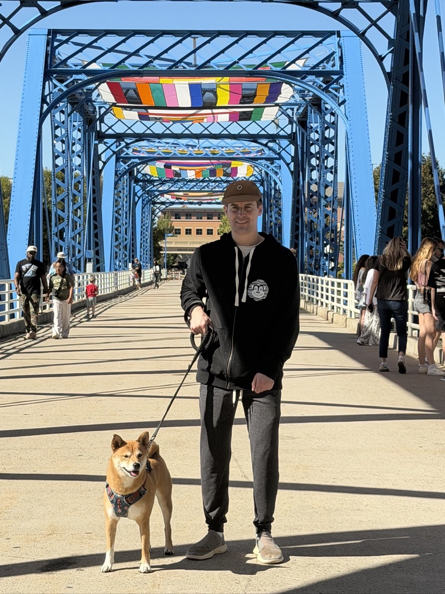

Job Board
Ranked Kanban with store lanes, aging & WIP signals, checklists, bulk actions, and a quick-add flow.
Product designer & full-stack engineer
From design tokens and accessibility gates to MongoDB, native iOS, and hand-authored WebAssembly — I take products from blank page to production. Below: a flagship platform, ten interface worlds built on the same real data, and the craft behind them.
My main case study is Blueprint — a complete field-service platform I designed and built solo. Around it sits a body of interface experiments that prove the same product can become ten different worlds without changing a single row of data.
Steel-to-task operations for grocery construction.
Blueprint runs a fixtures-and-construction shop end-to-end: warehouse prospecting → quotes → a field Kanban for every store buildout → full double-entry books → forecasting. Email and attachments parse straight onto cards via AI; the whole thing is themeable, keyboard-driven, and gated by a WCAG contrast check in CI. One designer-engineer, design through deploy.

Ranked Kanban with store lanes, aging & WIP signals, checklists, bulk actions, and a quick-add flow.
Pipeline, win-rate, and cash-on-hand at a glance — Chart.js datasets themed for light and dark.
In-house double-entry accounting: ledger, AR/AP, statements, bank rec, job costing, even fixed-asset depreciation.
Estimate builder with labor/total toggles and one-click branded PDFs; won quotes flow into invoices.
Live warehouse leads from OpenStreetMap + county GIS — owner, occupant, and assessed value, no paid API.
Monte-Carlo revenue forecast running on hand-authored WebAssembly — a genuine ~2× over the JS twin.



Each of these is the entire Blueprint app — same routes, same real data vocabulary — reskinned into a distinct design language to push on motion, depth, type, and platform CSS. Built to explore range, scoped so they never touch the production design system or its contrast gate.
Token-driven theming, light/dark, and a contrast check wired into CI so accessibility can't quietly regress.
SvelteKit & Svelte 5 on the front, TypeScript + MongoDB on the back, Dockerized to Azure via GitHub Actions.
A SwiftUI companion app with offline board CRUD, drag & drop, and a fastlane → TestFlight pipeline.
Email & receipt parsing onto cards, bank-line categorization, and month-end narratives — model proposes, human confirms.
Hand-emitted WebAssembly for hot compute, request-level caching, precompression, and a 560+ test safety net.
Focus traps, keyboard reach on every surface, a ⌘K command palette, view transitions, and reduced-motion paths.

I'm a product designer and engineer who likes owning the whole thing — the look, the build, and the ship. I care about interfaces that feel calm and obvious, code that holds up in production, and the details most people only notice when they're missing: keyboard paths, empty states, honest forms, a download that isn't 0 bytes.
Blueprint is where most of that lives right now: a real platform serving a real construction business, built and maintained solo from design tokens to Azure deploys. The explorations are where I keep the craft sharp.
Open to product design & engineering work. The fastest way to reach me is email.